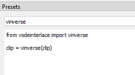

Post-processing fieldmatched frames
Fundamentally, the point of IVTC is to paste two fields together and get a full frame out of them. However, even if you do the pasting correctly, the output frame might still have combing artifacts. This can happen if one field is brighter than another due to a fade to/from white applied to the telecined footage. It can also happen during a crossfade where one field is further progressed in the fade than the other.
We can use vs-deinterlace’s fix_interlaced_fades and vinverse,
respectively,
to solve these two common problems.¹
Here are two image comparisons which show the respective fixes:
one,
two.
You can see that the vinverse fix is imperfect (there is ringing and other gunk on the eyebrow).
This guide will explain how to tell wobbly to apply these fixes to specific ranges of frames.
Setting up and using custom lists in wobbly
We can use the custom lists feature in wobbly to mark ranges that should be handled with vinverse or fix_interlaced_fades. Setting up custom lists is complicated, but you only have to go through the process once.
-
Set up presets
We need to set up “presets” in wobbly, which are basically vapoursynth functions that we want wobbly to apply to certain ranges.
For example, I can open the preset window, click new, name the preset “vinverse,” and put
clip = vinverse(clip)in the body. Or I can name the preset “black” and putclip = fix_interlaced_fades.Darken(clip, colors=[0, 0, 0], planes=[0, 1, 2])in the body—this would be for fades to/from black. Note that the usage ofclipis important; you cannot use another variable name. Every project probably needs a preset for white fades, for black fades, and for vinverse (for completion’s sake, the preset for fades to/from white could beclip = fix_interlaced_fades.Brighten(clip, colors=[1, 0, 0], planes=[0, 1, 2])).Obviously, something like
vinverse(clip)will error out if you do not import the vinverse function. You can do this in the same window you write the script. If you prefer to reduce the amount of imports in your script, you can also import the function in your own script instead.
-
Create custom lists
We need to create custom lists that correspond to each preset. You can do this by opening the custom lists window and clicking “new.” Each custom list needs to be set as “Post field match” or “Post decimate.”
-
Match each preset to its corresponding custom list
In the custom lists window, there is a dropdown on the left that will contain all your presets. Highlight each custom list and use the dropdown to assign the relevant preset to each list.
-
Select the appropriate custom list
There is a hotkey to cycle through the custom lists. It is
xby default. You can see the currently selected custom list in the bottom right. -
Set the range and save it to the custom list
The hotkey to start a custom list is
eby default, and the hotkey to end the range and save it to the list isc. You can set a range “backwards” (presseon the last frame and then presscon the first frame).
Steps 1-3 take a fair amount of time,
but we can skip them.
When you’ve used wibbly to make a list of wobbly projects,
you can do steps 1-3 on the first one
and then immediately navigate to the rest of the projects
and use Project > Import from project to copy the information over
(but make sure you remove any frame ranges you have set first,
as it copies those over too).
Or,
since the project files are in plaintext,
you can use a text editor to copy the relevant information
and transfer it to new project files.
Do this at your own risk,
since a mispaste will corrupt the project file.
¹Note: Vinverse is not an adequate solution for crossfades where the fields in one part of the fade are not properly matched, like so:
Using vinverse is dangerous in general. It can be destructive, and so turning it on in the middle of a scene can create a jarring change from one frame to the next.